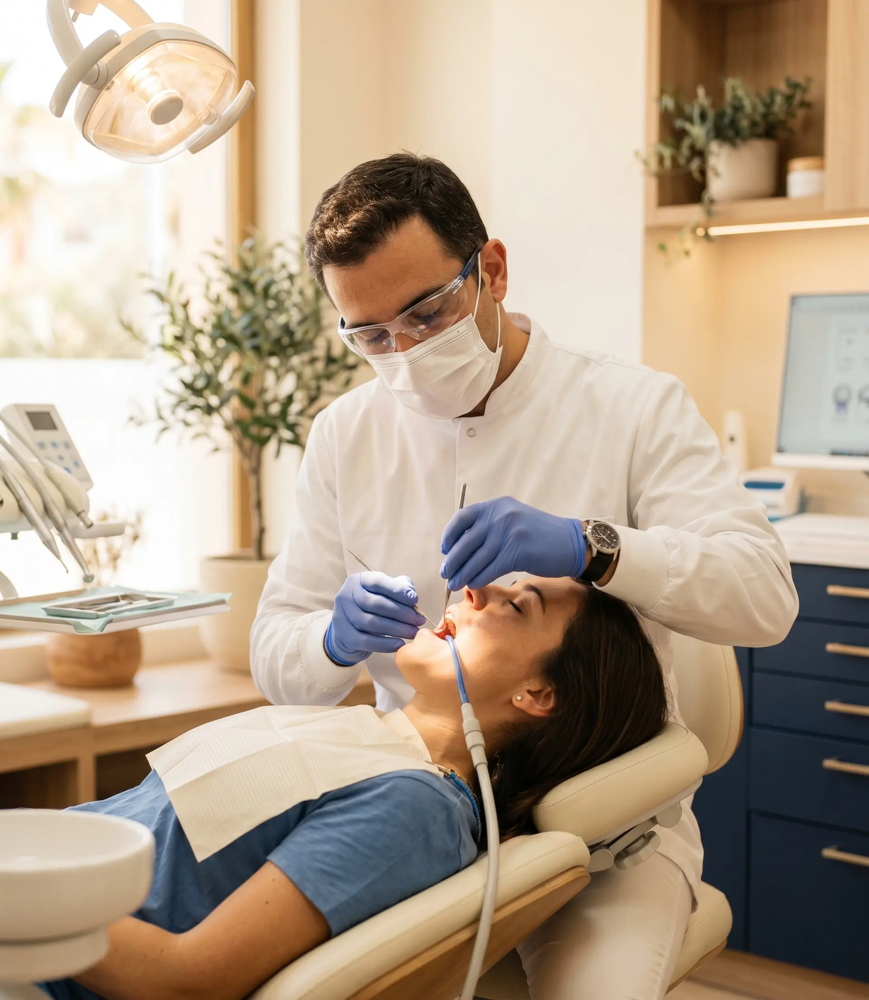
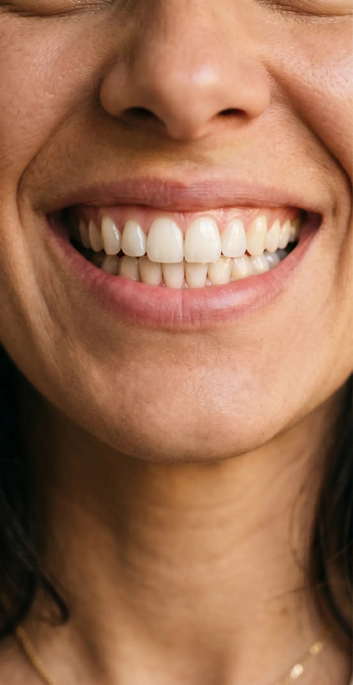

Implantes Dentales
en La Rinconada
Recupera piezas perdidas con implantes de titanio garantizados. Cirujano maxilofacial e implantólogo especialistas. Diagnóstico 3D previo. Desde 22 €/mes, todo incluido.
¿Qué es un implante dental y cuándo lo necesitas?
Un implante dental es una raíz artificial de titanio que se fija al hueso maxilar para sostener una corona protésica. Es la solución más duradera y natural para reemplazar dientes perdidos, ya sea por caries, traumatismo o enfermedad periodontal.
En Clinilab Pastor realizamos todo el proceso en nuestra propia clínica: desde el estudio con tomografía 3D (CBCT) para planificar el implante con precisión milimétrica, hasta la fabricación de la corona en nuestro laboratorio dental integrado.

¿Cómo es el proceso de un implante?
Un proceso claro, controlado y sin sorpresas. Te acompañamos en cada fase.
Diagnóstico 3D gratuito
Realizamos una ortopantomografía y, si es necesario, una tomografía CBCT 3D para evaluar el hueso disponible y planificar el implante con exactitud.
Colocación del implante
La cirugía la realiza nuestro cirujano maxilofacial. Se coloca el implante de titanio bajo anestesia local. Indoloro y con una recuperación rápida.
Osteointegración
Durante 3–6 meses el hueso crece alrededor del implante, fijándolo de forma permanente. Realizamos revisiones periódicas de seguimiento.
Corona definitiva
Fabricamos la corona en nuestro laboratorio propio: circonio, porcelana o zirconio prensado. Resultado estético y funcional idéntico a un diente natural.

La implantología más segura y asequible cerca de Sevilla
-
Especialistas propios: cirujano maxilofacial e implantólogo en plantilla, no subcontratados
-
Implantes con certificación C.E. y garantía. Solo marcas de reconocido prestigio internacional
-
Laboratorio dental propio: coronas fabricadas en nuestra clínica para mayor control de calidad y plazos
-
Diagnóstico CBCT 3D para planificación precisa antes de cualquier cirugía
-
Desde 22 €/mes con financiación sin intereses hasta 36 meses. Todo incluido, sin letra pequeña
Preguntas sobre implantes dentales
Recupera tu diente. Primera visita gratis.
Pide tu valoración gratuita hoy. Sin compromiso, sin listas de espera. Nuestro especialista te explicará todo y te dará un presupuesto detallado.